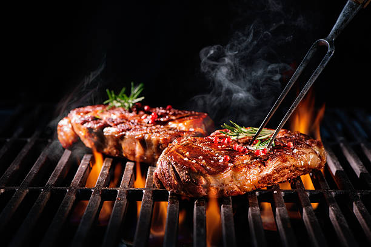
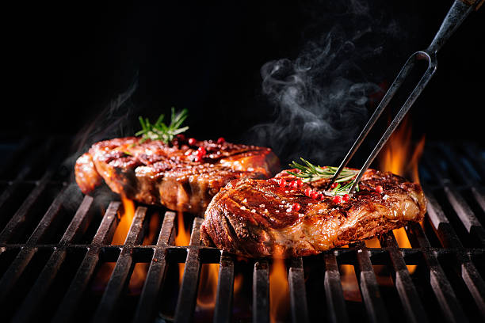

Made with love, served with biryani, Biryani (/bɜːrˈjɑːni/) is a mixed rice dish most popular in South Asia. It is made with rice, some type of meat (chicken, beef, goat, lamb, prawn, or fish) and spices. To cater to vegetarians, in some cases, it is prepared by substituting vegetables for the meat.
You can't buy happiness but you can buy pizza, Humans are drawn to foods that are fatty, sweet, rich and complex. Pizza has all of these components. Cheese is fatty, meat toppings tend to be rich and the sauce is sweet.
Good BBQ is like a hug for your taste buds, Grilling meat helps it retain more nutrients compared to baking or frying. Plus, you also consume less fat because all of the excess drips down through the grill! Even veggies benefit more from grilling than from boiling or frying because it helps to preserve key nutrients.